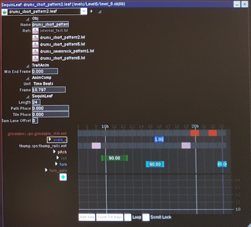

.leaf Objects
For level .objlib files, a .leaf Object (or SequinLeaf Object) represents a short pattern within a sub-level in the game. Each .leaf Object contains multiple Sequencer Objects that change the parameter values of different objects, including the .leaf Object itself, over the course of the pattern. The Sequencer Objects collectively define the events occurring during the pattern, such as the twisting and turning of the track, at what time thumps, red bars, blue rings, jumps and decorative objects appear on or around the track, the color changes of the skybox and post effects, at what time one-off samples are played, etc.
The following screenshot shows a modified version of the .leaf Object named drums_short_pattern2.leaf, from levels/Level6/level_6.objlib.

For sequin .objlib files, each of the .leaf Objects defines which objects and parameters are changed over the course of an animation.
Parameter List
The following is a list of known parameters belonging directly to a .leaf Object.
| Data Type | Value (little-endian) | Parameter Name | Meaning |
|---|---|---|---|
| float32 | 90db6c5c |
pitch | Controls the pitch angle of the track, expressed in degrees. A positive value raises the track; a negative value lowers the track. |
| float32 | 461da26a |
roll | Controls the roll angle of the track, expressed in degrees. A positive value rolls the track clockwise; a negative value rolls the track anticlockwise. |
| float32 | 659c0bb8 |
turn | Controls the turn angle θturn[^latex], or yaw angle, of the track, expressed in degrees. A positive value means turn left; a negative value means turn right. If ∣θturn∣≥15°[^latex] per beat, player input is required for the turn. A short turn is a turn that requires player input and lasts for one beat only; a long turn is one that requires player input and lasts for two consecutive beats or more. |
| float32 | 1e470b5d |
turn_auto | Same as turn, except it is guaranteed that no player input is required. |
| float32 | b44b9ff1 |
scale_x | Controls the scale scalex[^latex] of the track in x[^latex]-axis. 0<scalex<1[^latex] decreases the track size along the x[^latex]-axis; scalex>1[^latex] increases the track size. |
| float32 | 5c01c2b9 |
scale_y | Controls the scale scaley[^latex] of the track in y[^latex]-axis. 0<scaley<1[^latex] decreases the track size along the y[^latex]-axis; scaley>1[^latex] increases the track size. |
| float32 | 2794bcce |
scale_z | Controls the scale scalez[^latex] of the track in z[^latex]-axis. 0<scalez<1[^latex] decreases the track size along the z[^latex]-axis; scalez>1[^latex] increases the track size. |
| float32 | 2e08b151 |
offset_x | Controls the offset of the track in x[^latex]-axis. |
| float32 | fa4ab34f |
offset_y | Controls the offset of the track in y[^latex]-axis. |
| float32 | 1ff804bc |
offset_z | Controls the offset of the track in z[^latex]-axis. |
| bool | 48697144 |
visibla01 | Controls the visibility of the leftmost track in a multi-lane section. See the visible parameter for details. |
| bool | 842a58fa |
visibla02 | Controls the visibility of the second leftmost track in a multi-lane section. See the visible parameter for details. |
| bool | a444acf9 |
visible | Controls the visibility of the center track in a multi-lane section. This is the same default track used in single lane sections. Consecutive values of 1 represent the presence of the lane; consecutive values of 0 represent its absence. A transition from 1 to 0 represents a lane end; a transition from 0 to 1 represents a lane start. When a lane ends, the direction of the lane-end turn is determined by whether there is a visible track on its left or on its right. The two lanes on both sides of a starting or ending lane cannot be both visible or both invisible. |
| bool | 93dcfe04 |
visiblz01 | Controls the visibility of the second rightmost track in a multi-lane section. See the visible parameter for details. |
| bool | 7ce4037d |
visiblz02 | Controls the visibility of the rightmost track in a multi-lane section. See the visible parameter for details. |
Format
Overview
u32 header[4];
u32 hash;
u32 unknown;
u32 hash;
str timeUnit;
u32 hash;
vec<Trait> traits;
u32 unknown;
u32 beatCount;
vec3<f32> unknown[beatCount];
u32 unknown;
u32 unknown;
u32 unknown;
Trait
str object;
u32 unknown;
u32 subojectHash;
s32 selectorShareIdx;
u32 datatype;
vec<Datapoint<datatype>> datapoints;
vec<Datapoint<datatype>> editorDatapoints;
u32 unknown[5];
str intensity[2];
u8 unknown;
u8 unknown;
u32 unknown;
f32 unknown[5];
u8 unknown[3];
Datapoint\<T>
f32 time;
T value; // Depends on the datatype being used
str interpolation;
str easing;
Footnotes
[^latex]: This should be formatted with LaTeX.